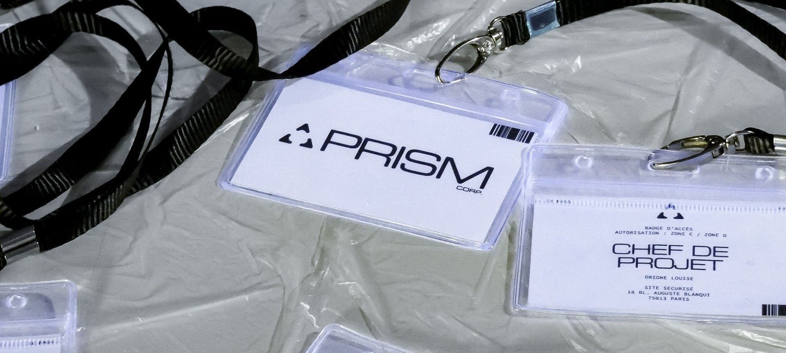
Collectif Prism
- Opération Diffraction
Le collectif Prism, constitué de Niel Armengaud, Albane Heitz et Louise Orione,
s'engage à dévoiler et matérialiser les mécanismes naturalisés du numérique à travers des dispositifs et expériences interactives.
Opération Diffraction est une expérience immersive à la croisée de l'escape game et du théâtre immersif, qui interroge de manière ludique et critique notre rapport aux plateformes numériques.
Les participants incarnent de nouveaux employés de PRISM Corporation, leader mondial de la publicité ciblée. Le temps de l'expérience, ils acceptent le contrat de travail sans le lire, exécutent des tâches répétitives sans en comprendre le sens, sont observés sans le savoir. Les mêmes habitudes et mécanismes que sur les plateformes numériques, mais cette fois dans un espace physique, matériel, en temps réel.
Un bug, un son, un indice suffisent à faire naître le doute. C'est aux participants de comprendre, par eux-mêmes, qu'ils ne sont pas seulement employés de PRISM Corp., ils en sont aussi la donnée.
Comme une diffraction, ce projet est né de 3 regards, 3 sujets de recherche distincts, qui se croisent et se répondent autour d'un même thème. Le fruit de ces 10 mois de recherche-création est à retrouver dans la collection En-quêtes ci-dessous, réunissant les trois mémoires du collectif.
Découvrez le projet et ses coulisses en vidéo !
L'ensemble des montages ont été réalisé par Louise Orione.


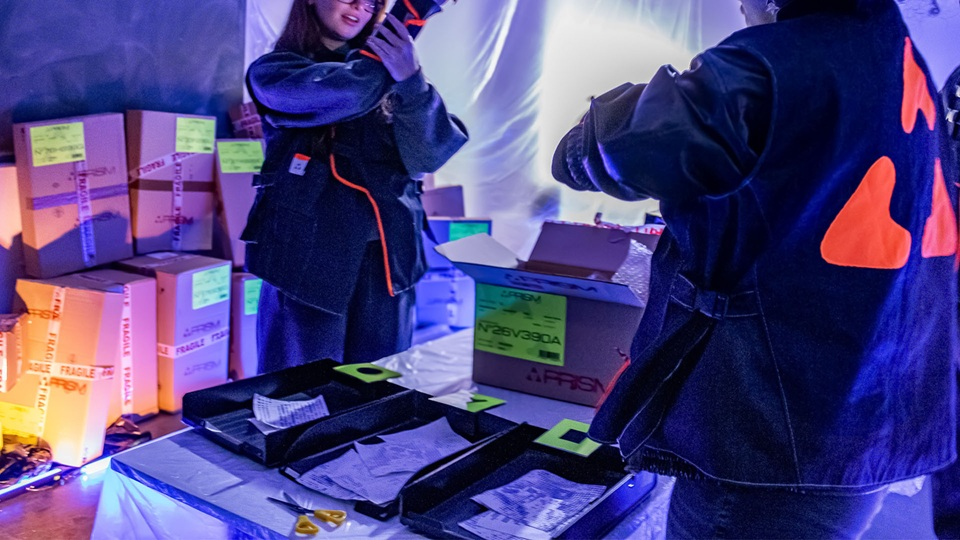
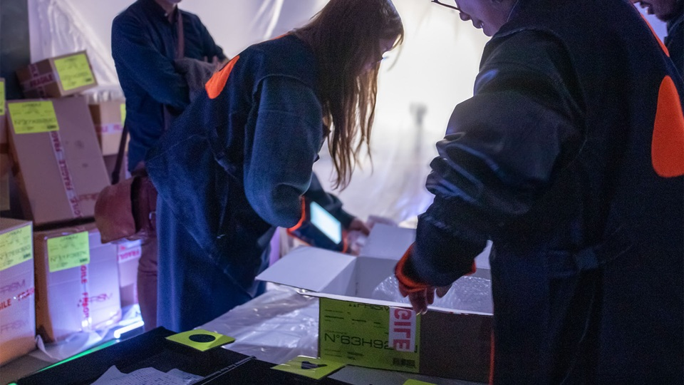
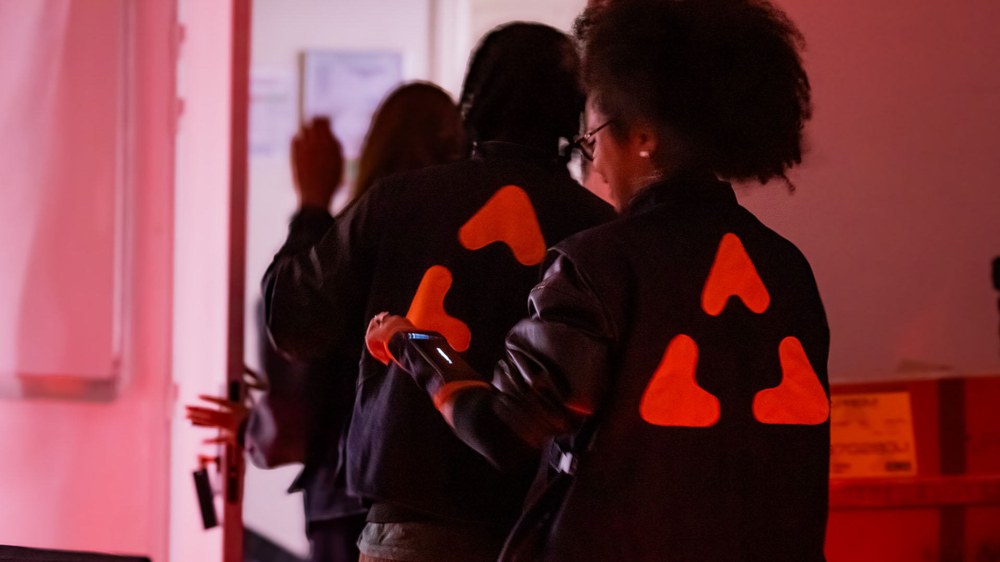
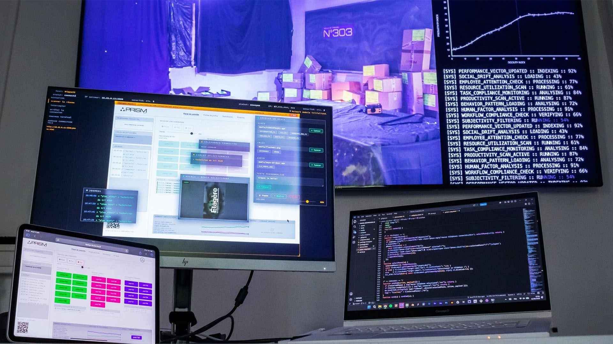
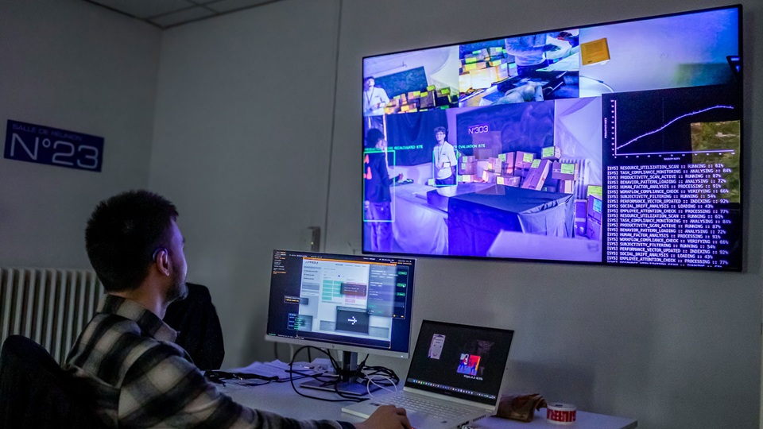
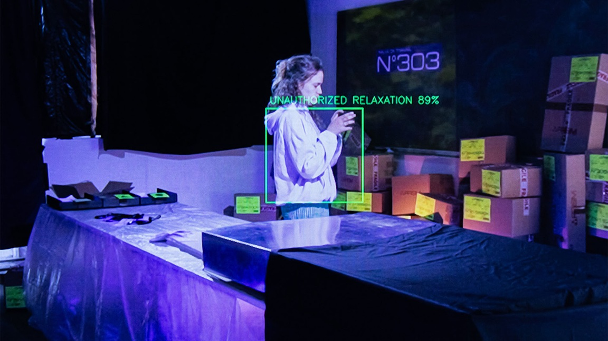
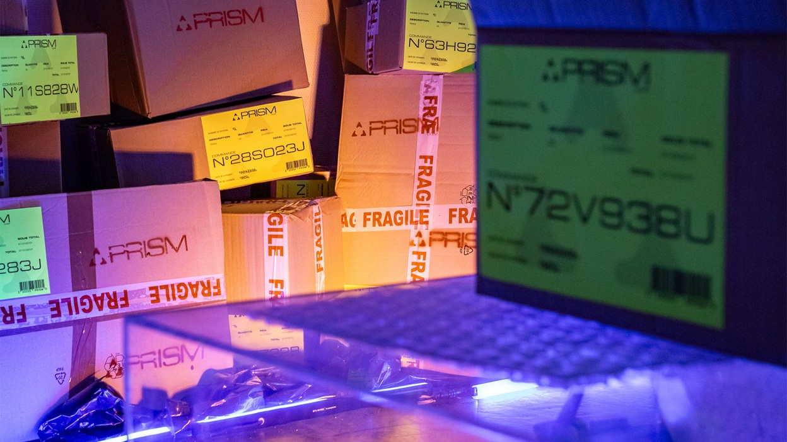
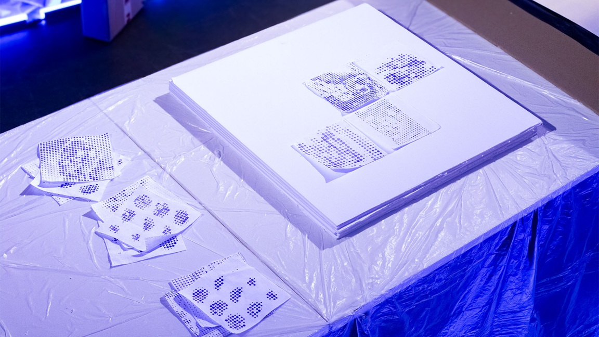
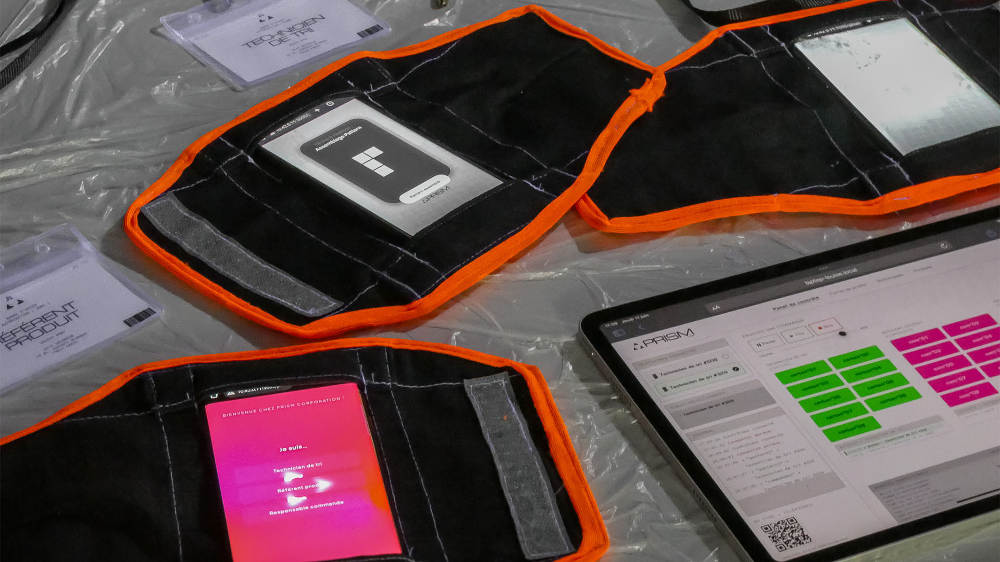
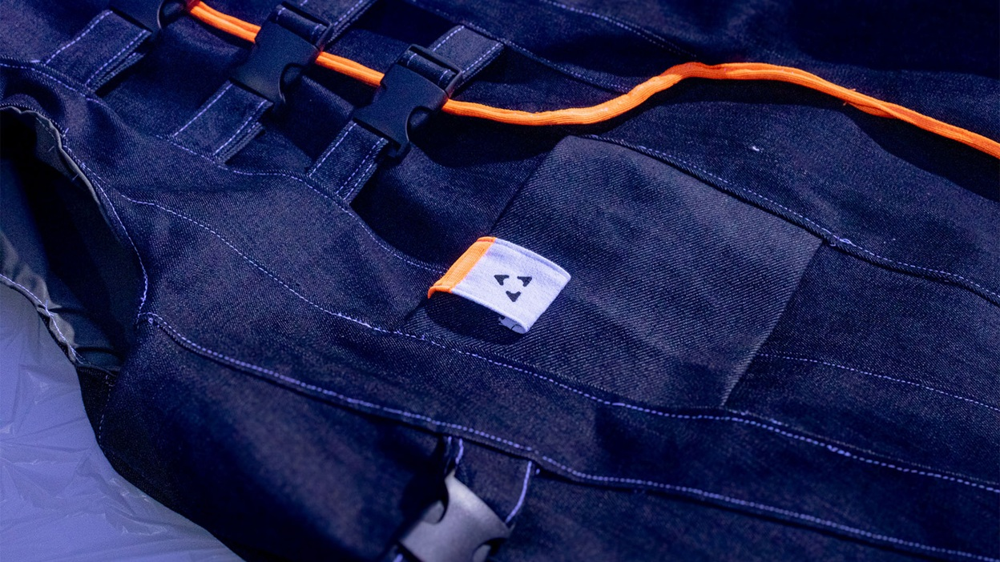
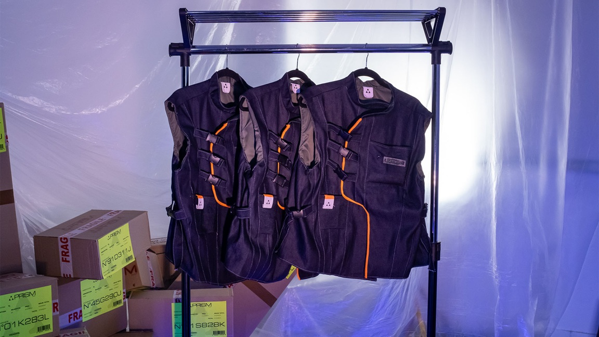
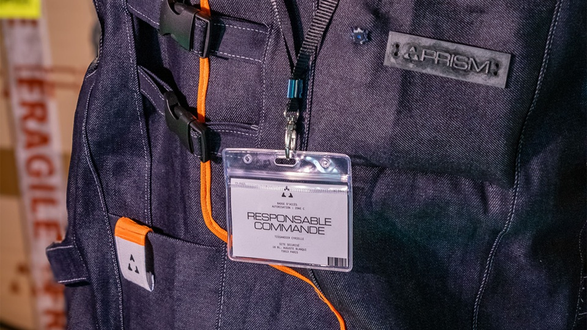
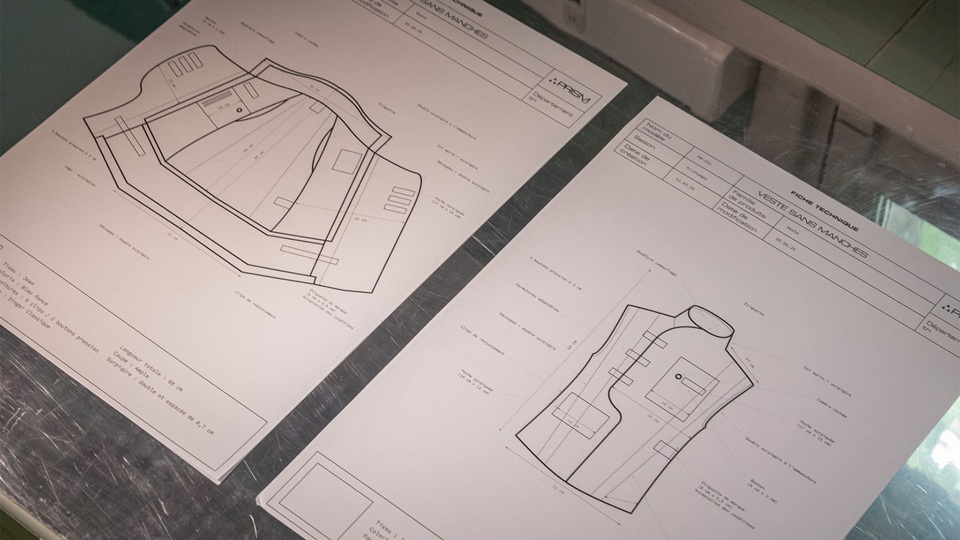
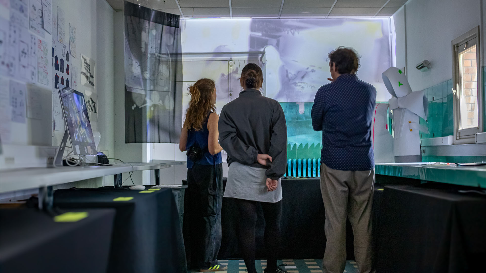
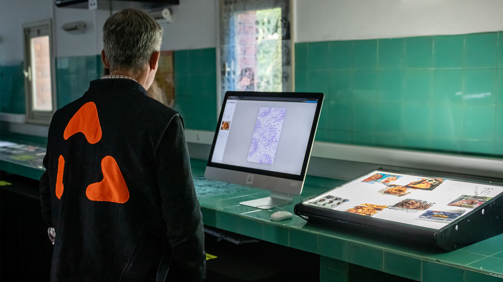
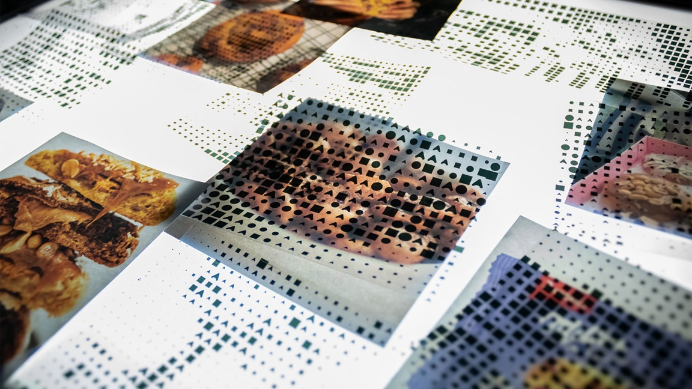